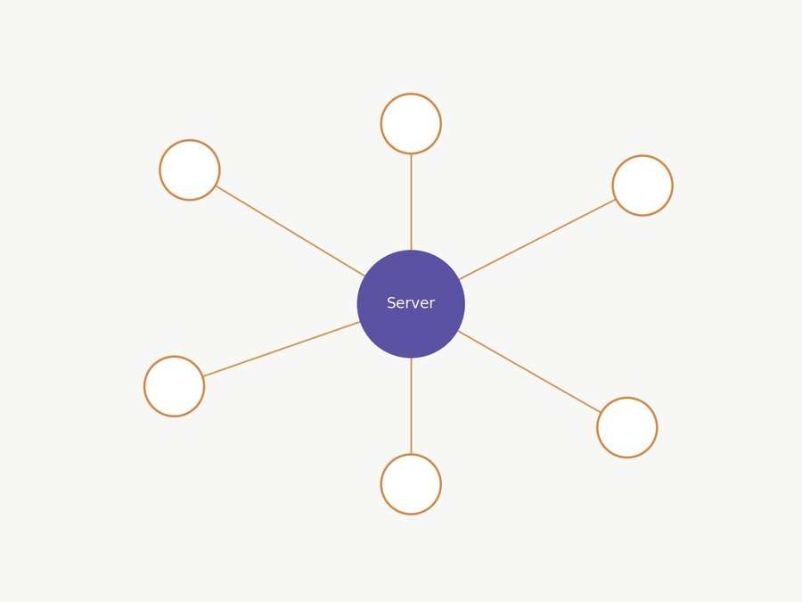

Illustrative diagram of the server/client architecture, not an actual screenshot.
A multi-client, real-time chatroom, built on top of a basic RFC 862 echo-server skeleton provided in a Computer Networks course and extended into a full broadcast chat system.
On the server side: a thread-per-connection architecture using a cached thread pool, so every connected client gets its own thread reading from its socket into a shared, thread-safe message queue; a separate broadcaster thread continuously drains that queue and fans each message out to every connected client — a classic producer/consumer pattern. On the client side: a Swing desktop GUI with a text field and scrolling message view, backed by a background thread that continuously reads incoming messages from the server.
Built with one other teammate on top of an instructor-provided echo-server skeleton for Computer Networks.
What a "thread" actually is. A normal program runs one instruction at a time, top to bottom. A thread is a second (or third, or hundredth) independent line of execution running inside the same program, sharing the same memory. That's exactly what a chat server needs: it has to read from client A, read from client B, and broadcast messages out to everyone, all at roughly the same moment — not take turns waiting on each one. Java's ExecutorService (exec below) hands each new client connection its own thread from a pool, so one slow or silent client never blocks the others.
Built on top of a basic RFC 862 echo-server skeleton. The server uses a cached thread pool: every client connection gets its own thread, and all of them write into one shared message queue.
Vector<String> messageQueue = new Vector<String>();
ArrayList<BufferedWriter> clients = new ArrayList<BufferedWriter>();
Runnable broadcast = new BoradcastThread(messageQueue, clients);
exec.execute(broadcast);
while (true) {
Socket client = sock.accept();
BufferedWriter toClient = new BufferedWriter(new OutputStreamWriter(client.getOutputStream()));
clients.add(toClient);
exec.execute(new Connection(client, messageQueue));
}A single dedicated broadcaster thread drains that queue and fans each message out to every connected client — the classic producer/consumer pattern:
public void run() {
while (true) {
try { Thread.sleep(100); } catch (InterruptedException ignore) { }
while (messageQueue.isEmpty() == false) {
String message = messageQueue.get(0);
messageQueue.remove(0);
for (int i = 0; i < clients.size(); i++) {
clients.get(i).write(message + "\r\n");
clients.get(i).flush();
}
}
}
}A subtlety worth knowing. Vector is used here specifically because each of its individual methods (add, get, remove, isEmpty) is internally synchronized, so two threads can't corrupt it by writing at the exact same instant. But that guarantee only covers one method call at a time — it doesn't cover a sequence of calls. messageQueue.isEmpty() == false followed by messageQueue.get(0) is two separate operations, and between them another thread could sneak in and drain the queue, leaving the get(0) call to fail. In this design that's a low-stakes race — with only one broadcaster thread ever reading the queue, it can't happen — but it's exactly the kind of check-then-act gap that causes real bugs in concurrent code, and part of why modern Java code generally reaches for ConcurrentLinkedQueue or a BlockingQueue instead of leaning on individually-synchronized methods.
Coursework project — Bachelor of Science, Computer Information Systems & Finance — Westminster College